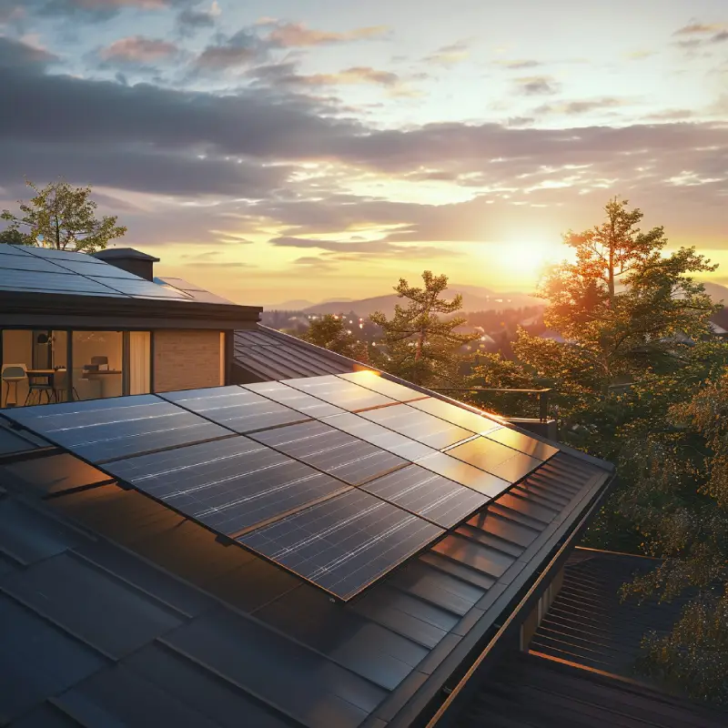
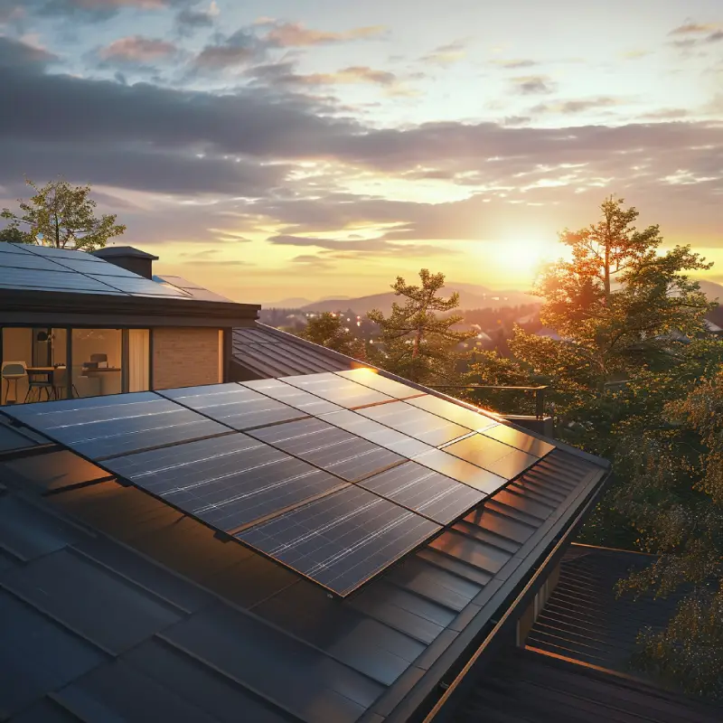
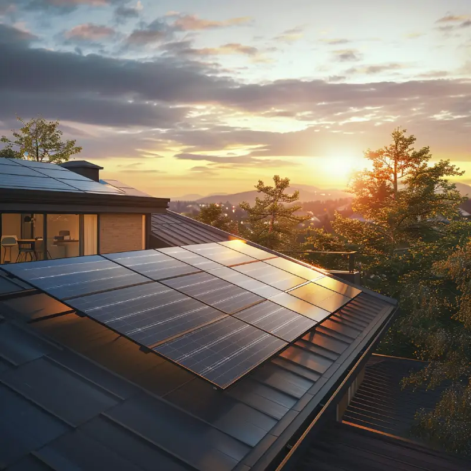

Selamat Datang di EcoGreen
Bersama kita ciptakan bumi yang lestari melalui edukasi dan aksi nyata.
Jelajahi Sekarang 


Bersama kita ciptakan bumi yang lestari melalui edukasi dan aksi nyata.
Jelajahi Sekarang

FITUR UNGGULAN
EcoGreen adalah platform cerdas berbasis teknologi yang menggabungkan prinsip keberlanjutan dan efisiensi. Dirancang untuk mempermudah pengelolaan, memperkuat kolaborasi, dan mempercepat transformasi hijau melalui fitur digital yang modern, adaptif, dan berdampak nyata.
Pelajari isu lingkungan lewat artikel, infografis, video edukatif
Temukan cerita inspiratif, dokumentasi aksi hijau, dan peta lokasi ramah lingkungan.
Ikut serta dalam aksi lingkungan, kampanye digital, dan daftar sebagai relawan.
Terhubung dengan aktivis dan sesama pengguna, serta berbagi pengalaman hijau bersama.
Ingin jadi bagian dari perubahan positif?
Mari bicarakan bagaimana EcoGreen dapat memperkuat perjalanan
keberlanjutan Anda. Jadwalkan konsultasi gratis sekarang juga!
NILAI KAMI
BERFOKUS PADA MANUSIA
Kami menggabungkan pemahaman ekologi dengan teknologi berkelanjutan untuk menciptakan solusi yang ramah lingkungan, tangguh, dan berpusat pada manusia.
BERBASIS TEKNOLOGI
Dari komunitas ramah lingkungan hingga program reboisasi, kami berkolaborasi secara global untuk mewujudkan perubahan nyata bagi bumi.

EcoGreen mendukung proyek-proyek berkelanjutan melalui edukasi digital, pelaporan dampak, dan kolaborasi komunitas hijau.
Siapa saja! Pelajar, relawan, organisasi, dan perusahaan dapat bergabung untuk berkontribusi terhadap masa depan hijau.
Ya, EcoGreen rutin mengadakan workshop, penanaman pohon, dan aksi bersih lingkungan yang terbuka untuk umum.
Daftarkan diri di website kami, pilih program yang sesuai minatmu, dan mulai aksi hijau bersama EcoGreen.
Statistik EcoGreen
Proyek berfokus pada manusia dan komunitas lokal.
Tingkat kepuasan mitra dan komunitas yang terlibat.
Proyek berkelanjutan telah berhasil diselesaikan dengan dampak nyata untuk bumi.
Inisiatif ramah lingkungan telah didukung secara global
Testimoni
EcoGreen bukan hanya gerakan, tapi rumah bagi ribuan aksi nyata dari individu dan komunitas. Ini kata mereka.
"Berkat EcoGreen, desa kami berhasil mengelola limbah rumah tangga jadi kompos. Program edukasinya sangat membumi dan aplikatif."
"Saya mulai menanam hidroponik setelah ikut kelas EcoGreen. Sekarang saya ajarkan ke anak-anak di sekolah!"
"EcoGreen membukakan mata saya bahwa perubahan kecil bisa berdampak besar. Sekarang kantor kami rutin adakan aksi bersih sungai."
"Berkat EcoGreen, desa kami berhasil mengelola limbah rumah tangga jadi kompos. Program edukasinya sangat membumi dan aplikatif."
"Saya mulai menanam hidroponik setelah ikut kelas EcoGreen. Sekarang saya ajarkan ke anak-anak di sekolah!"
"EcoGreen membukakan mata saya bahwa perubahan kecil bisa berdampak besar. Sekarang kantor kami rutin adakan aksi bersih sungai."